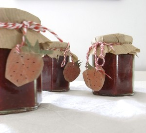

Facebook
Pinterest
Instagram
ES
EN
DE
☰ Menú
Inicio
La casa
Accesorios
Decorar
Instrucciones
Ilustración
Cantimploras personalizadas
Cuaderno de manualidades y actividades 01
App Not Online Anymore
Blog
Fiestas
Navidad
Pascua
Halloween
Carnaval y disfraces
San Valentín
Cumpleaños
Día de la Madre/Padre
Vuelta al cole
Estaciones
Primavera
Verano
Otoño
Invierno
Qué hacer
Juguetes
Juegos
Imprimibles
Recetas y comida
Decoración
Pintar
Experimentos
Al aire libre
Aprender
Animales
Regalos y joyas
Construir y trucos
Otras manualidades
Material
Papel
Cartón
Rollos de papel
Reciclaje
Piedras
Hojas y naturaleza
Tela, coser y tejer
Inicio
›
Blog
Blog
Fiestas
Navidad
Pascua
Halloween
Carnaval y disfraces
San Valentín
Cumpleaños
Día de la Madre/Padre
Vuelta al cole
Estaciones
Primavera
Verano
Otoño
Invierno
Qué hacer
Juguetes
Juegos
Imprimibles
Recetas y comida
Decoración
Pintar
Experimentos
Al aire libre
Aprender
Animales
Regalos y joyas
Construir y trucos
Otras manualidades
Material
Papel
Cartón
Rollos de papel
Reciclaje
Piedras
Hojas y naturaleza
Tela, coser y tejer
Exterior
Saltando por la ciudad
Actividad
Clips
Juguete
Tabla de surf
Juguete
Cerdito o gato
Comida
Cubitos de hielo
Material
Circuito por el salón
Otoño
Calendario de estaciones
Material
Albahaca
Actividad
Caritas
Comida
Corazones de fruta
Piedras
Torre 03
Actividad
Casa de sueños
Actividad
Ese soy YO
Exterior
Invernadero
Comida
Mermelada

Actividad
¿Por qué juguetes?
Actividad
Dibujos con canicas
Material
Retratos de familia
Exterior
Burbujas
Material
Familia
Material
Flores 01
Actividad
Arbol y números
Piedras
Piedras 02
Comida
Manzana con corazón
← Más recientes
Página 34 / 40
Más antiguas →